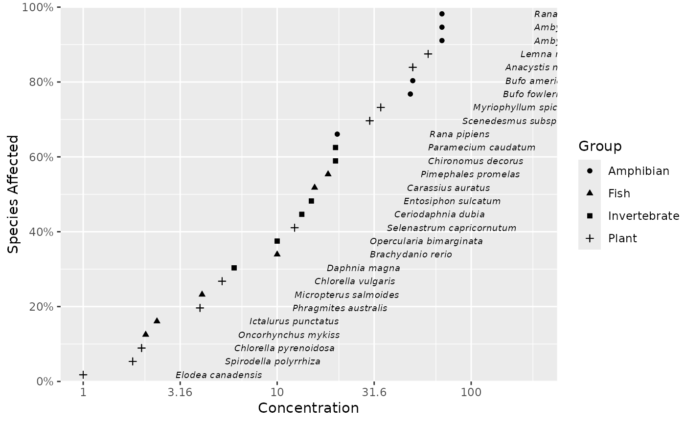

Plots species sensitivity data.
Arguments
- data
A data frame.
- left
A string of the column in data with the concentrations.
- right
A string of the column in data with the right concentration values.
- ...
Unused.
- label
A string of the column in data with the labels.
- shape
A string of the column in data for the shape aesthetic.
- color
A string of the column in data for the color aesthetic.
- size
A number for the size of the labels.
- xlab
A string of the x-axis label.
- ylab
A string of the x-axis label.
- shift_x
The value to multiply the label x values by (after adding
add_x).- add_x
The value to add to the label x values (before multiplying by
shift_x).- big.mark
A string specifying used between every 3 digits to separate thousands on the x-axis.
- suffix
Additional text to display after the number on the y-axis.
- bounds
A named non-negative numeric vector of the left and right bounds for uncensored missing (0 and Inf) data in terms of the orders of magnitude relative to the extremes for non-missing values.
- trans
A string which transformation to use by default
"log10".- xbreaks
The x-axis breaks as one of:
NULLfor no breakswaiver()for the default breaksA numeric vector of positions
Examples
ssd_plot_data(ssddata::ccme_boron, label = "Species", shape = "Group")
